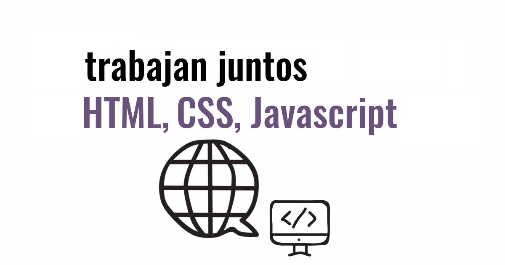

Conceptos 1
쯈ue es CSS?
Por sus siglas en inglés (Cascading Style Sheets), la hoja de estilos en cascada o CSS, en su abreviatura, es un lenguaje de diseño gráfico para definir y crear la presentación de un documento estructurado escrito en un lenguaje de marcado.
Es muy usado para establecer el diseño visual de los documentos web, e interfaces de usuario escritas en HTML o XHTML; el lenguaje puede ser aplicado a cualquier documento XML, incluyendo XHTML, SVG, XUL, RSS, etc.
Junto con HTML y JavaScript, CSS es una tecnología usada por muchos sitios web para crear páginas visualmente atractivas, interfaces de usuario para aplicaciones web y GUIs para muchas aplicaciones móviles (como Firefox OS).

CSS está diseñado principalmente para marcar la separación del contenido del documento y la forma de presentación de este, características tales como las capas o layouts, los colores y las fuentes. Esta separación busca mejorar la accesibilidad del documento, proveer más flexibilidad y control en la especificación de características presentacionales, permitir que varios documentos HTML compartan un mismo estilo usando una sola hoja de estilos separada en un archivo .css, y reducir la complejidad y la repetición de código en la estructura del documento.
https://es.wikipedia.org/wiki/Hoja_de_estilos_en_cascada
Diferencia entre HTML y CSS3
HTML y CSS son los dos principales lenguajes empleados para diseñar páginas web. HTML responde a las siglas de lenguaje de hipertexto en inglés (hypertext markup language) y CSS a las de hojas de estilo en cascada (cascade style sheet), es decir, los estilos están definidos por orden jerárquico.
HTML
El lenguaje HTML se encarga de dar formato y estructura a un documento HTML
CSS
CSS3 es el lenguaje encargado de dar estilo, es el que se encarga de la estética del documento y lo hace más atractivo visualmente
Estilos y uso de los estilos en un documento HTML
Los estilos CSS son reglas que se definen para los elementos HTML. Dentro de un archivo CSS podemos incluir infinitas reglas, y cada una se puede aplicar a varios selectores diferentes y cada declaración puede incluir tantos pares propiedad/valor como sean necesarios.
Los estilos trabajan en HTML, bajo el postulado ¨la separación de la estructura de la presentación¨